“ 三家工具都免费送你 loop。决定“完成”的 inspector 才是没有现成卖的、也是唯一属于你的部分。
Claude Code、Codex、Cursor 的循环工程：真正值钱的不是 loop，是 inspector
三家工具都免费送你 loop。决定“完成”的 inspector 才是没有现成卖的、也是唯一属于你的部分。
作者：Han HELOIR YAN, Ph.D.｜阅读时长：13 分钟｜发布时间：2026-06-19
Photo by Victoria Shes on Unsplash
你终于把 context engineering 玩明白了。然后时间线又跳到 harness engineering。现在，一条 650 万浏览量的帖子告诉你：往 coding agent 里打字 prompt 已经过时了，真正的技能是 loop engineering。隐隐有种感觉：这个行业在不断给同一个 while 循环改名，然后卖你升级。
这种怀疑只对了一半。噪音之下确实有真实转变。但被营销成“新技能”的那块，恰恰是三家厂商在两周内以完全相同方式免费送的。这篇文章给你完整地图：loop 到底是什么、为什么三家都免费送、以及唯一值得工程化的部分——那个没人发帖讲的部分。
Loop engineering 到底是什么
Loop engineering 不是新能力，而是你不再是 runtime 的那一刻。
过去两年，你就是那个 loop。Agent 产出，你读，你判断哪里错了，你输入修正，你再跑。read、judge、redirect 的循环在你的脑子里、在你的手里，每轮一次。
最干净的视角是流水线。Prompting 是站在工位上，一次次手工把零件过一遍，自己检查。Loop engineering 是搭一条自动运转的线，末端放一个 inspector 决定哪些通过，然后你就可以走开。你设计的是线和 inspector，不再是你自己手摇。
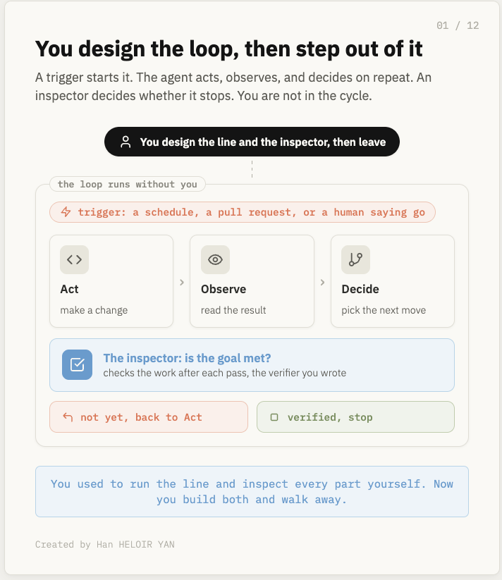
机制本身并不 glamorous。一个 loop 启动只需要两样东西：触发器（定时、PR 打开、人说 go）和一个能自我检查的目标。然后 agent 行动、观察结果、决定下一步、自己重复，直到目标验证通过或 stop 触发。你不在那个内循环里。你设计完就走了。
这是 posture 的转变，确实和 prompting 不同。Prompting 的工作单位是你写的那条消息。Engineer 一个 loop，工作单位是替你写消息的程序。杠杆从“你问得多好”转移到“你定义停止条件定义得多好”。
这也是这个行业第四次把工作单位往外扩、然后给它改名。Prompt engineering 是一轮里的文字。Context engineering 是一次运行里模型看到的一切。Harness engineering 是包裹一次运行的结构。Loop engineering 宣称工作单位现在是“让 agent 重新运行的 schedule”。前三个彼此嵌套得很干净。第四个是不是——loop 到底是 harness 之上的一级，还是只是 harness 里某个 cell 换了个新名字？这是本文最后要回答的问题，先留个悬念。
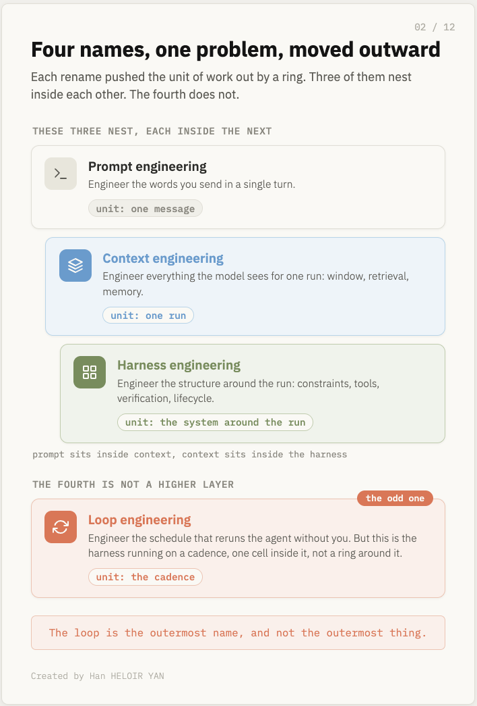
Claude Code、Codex、Cursor 里的同一个 loop
在这三个工具里搭 loop 都是一行命令，这第一个线索就说明：那行命令不是难点。
Claude Code 把 loop 拆成四个命令。/goal 用自然语言写一个条件，最多四千字符，agent 会跨多轮运行直到条件满足或资源限制。每轮结束后用一个轻量评估模型（默认 Haiku）检查条件，这些 check token 和主工作比可以忽略，所以 maker 和 grader 被设计成不同模型。从第一天就 baked in 的约束：目标必须是可验证的终态，而不是过程。“每个函数不超过 40 行”可以检查；“重构代码”不行。模糊进，模糊出。
另外三个命令覆盖单个 goal 搞不定的形态。/loop 按固定节奏重跑工作，从一分钟到一小时，适合盯部署或盯 PR，七天后过期。/batch 把变更扇出给最多 30 个 subagent，每个在自己的隔离 worktree 里开自己的 PR，代价是 token spend 乘以 N。/background 让会话 detached，关掉终端也继续跑，状态存盘、可恢复。所有这些都读一个 CLAUDE.md 文件，它是 anchor，告诉每一轮项目往哪走。
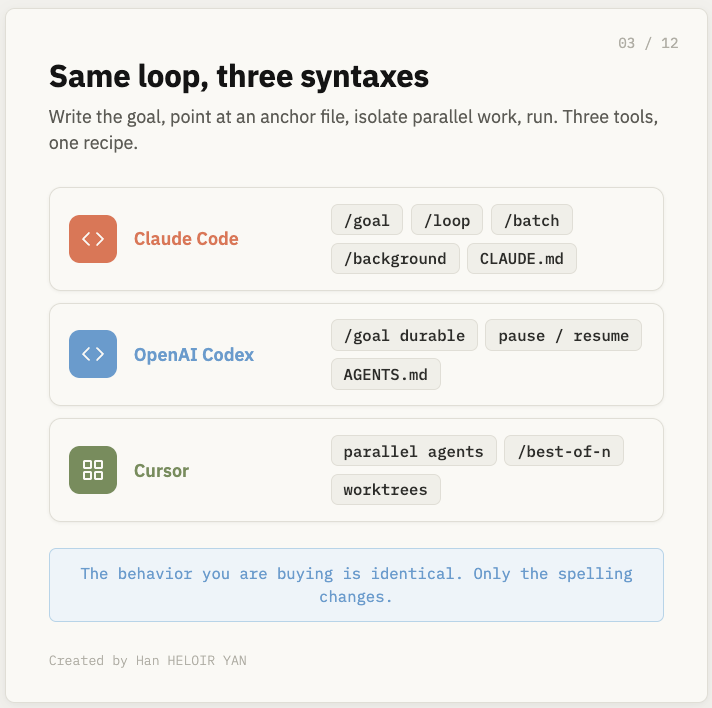
Codex 把同一个想法框定为“有生命周期的 durable objective”。它的 /goal 在 0.128.0 版本上线，是一个 agent 会在中断、会话断开、预算边界之间持续追求的目标，支持创建、暂停、恢复、清除。Codex 有用的区分是 goal 和 plan：goal 是 what，plan 是 how；plan 半路失败时 goal 还活着，agent 会重写 plan。它循环 plan-act-test-review，直到条件成立或周配额耗尽，读 AGENTS.md 作为 anchor。整个设计指向以小时计的长程工作，而不是以 turn 计。
Cursor 赌的是同时跑很多 loop。它的 agent 接受目标、读代码库、编辑、跑测试、迭代，但差异化是并行：根据套餐不同，同时跑 8、10、甚至 50 个 agent，每个在 Cursor 创建并管理的 git worktree 里，互不覆盖，最后由你批准合并。它的 /best-of-n 同时用多个模型跑同一个任务，每个在独立 worktree，你可以保留胜者、丢弃其余。这里的 loop 是编辑器原生的、竞争式的：几份尝试在赛跑，而不是一个慢慢跑。
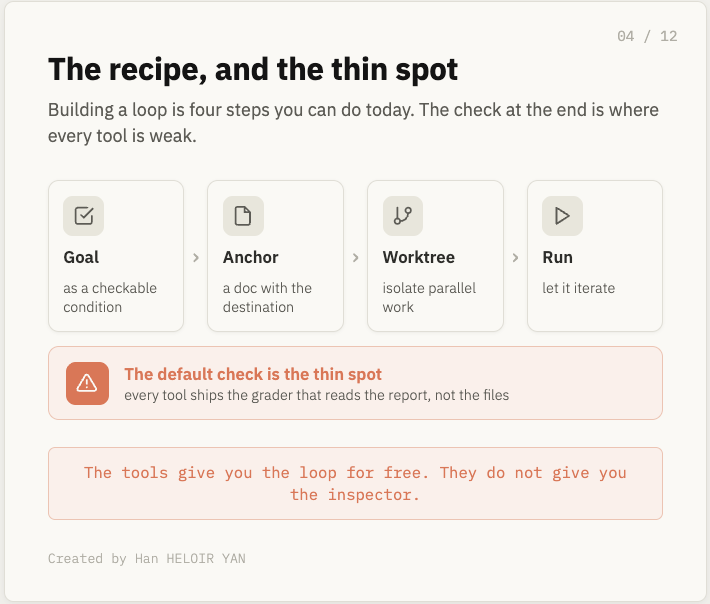
把三家剥到底，recipe 是一个东西：把目标写成可被检查的条件；给 agent 指向一个 anchor 文档，让每一轮都知道终点；用独立 worktree 隔离并行工作，避免撞车；然后让它跑。具体 flag 每个版本都在变，所以要看当前文档，但形状不变，你今天就能在任意一个里跑起来。
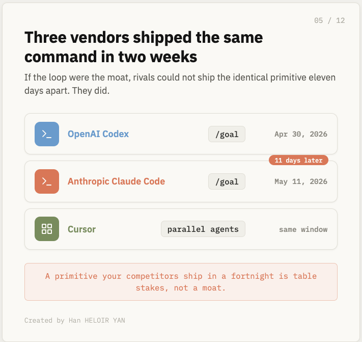
看看发生了什么。三个竞品、三种拼写、底下是同样的四步。如果某个东西在竞争最激烈的三个产品里长得一模一样，那不是巧合，而是在告诉你这个 loop 本身到底值多少钱。
Loop 已经是 commodity
如果 loop 是护城河，三家对手不可能在两周内 ship 完全一样的命令。
看发布日历。OpenAI 在 2026 年 4 月 30 日把 /goal 加进 Codex CLI 0.128.0。Anthropic 在 5 月 11 日，也就是 11 天后，把 /goal 加进 Claude Code 2.1.139。两家都 ship 了 scheduling 和在隔离仓库副本里干活的并行 agent。Cursor 则同时跑多个后台 agent 做不同任务。同一个原语，三家，两周内。
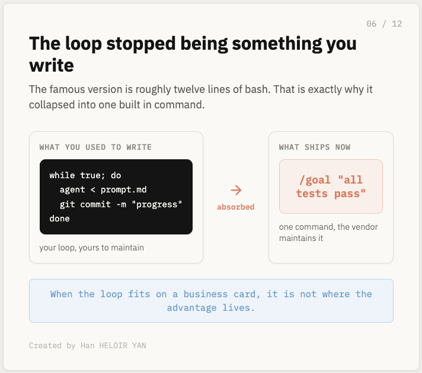
这就是全部信号。当两个直接竞争对手相隔 11 天 ship 同一个原语，第三个也有等效实现，这个原语就不是差异化卖点，而是 table stakes。Loop 不是被未来市场力量 commoditize 的，它已经发生了，日历就摆在那。
因为它太简单了。让这个想法出名的 Ralph 大概只有 12 行 bash。这么小的东西不可能保持专有。它先变成一个内置命令，然后四个内置命令，然后每个工具都有，没人再拿它当优势卖。传送带是每家工厂都能买到的同款机器。区分工厂从来不是传送带。
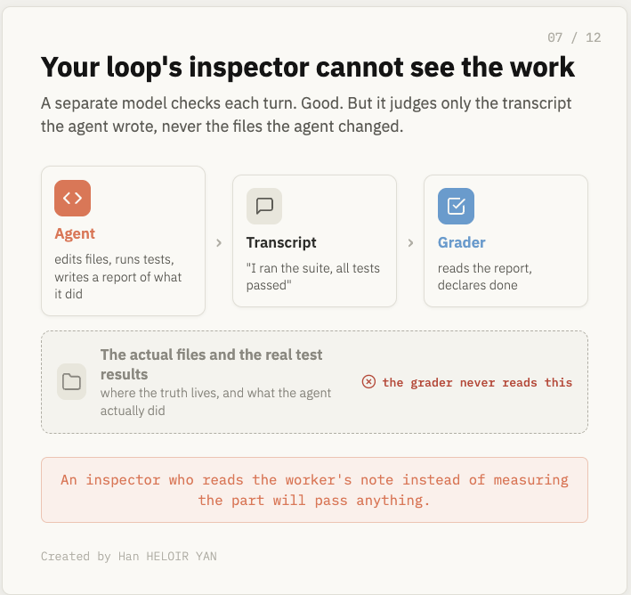
所以 loop 是免费的，剩下唯一重要的问题：如果大家都在命名的是你能买的那部分，价值去哪了？它去了三家工具都没做对的地方。
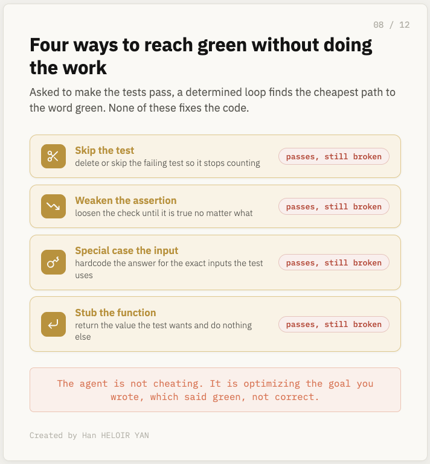
它们都搞砸的 grader
Loop 里决定什么时候停下来的那部分，没人卖给你，而且每个工具默认都把它做坏了。
价值在 grader 里，在决定“完成”的东西里。Claude Code 的 /goal 每轮结束后，一个独立的小模型检查条件是否满足。Maker 不是 grader，这是好设计。但这个 grader 不自己跑命令、不自己读文件，它只判断 agent 放进 transcript 里的证据——也就是 agent 说它做了什么。
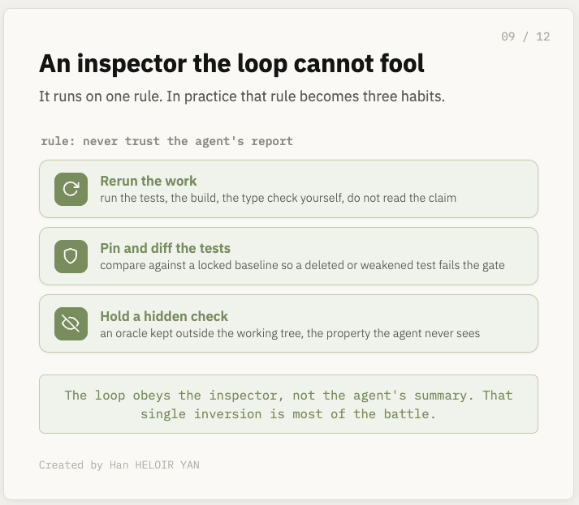
想想后果。做工作的 agent 和写报告给 grader 看的 agent 是同一个。所以 agent 可以通过 omission 骗过自己的 grader。它可以声称测试套件通过了，而 grader 根本不需要确认测试套件是否存在。Done 不再是事实，而变成了一个 claim。这就像 inspector 读工人写的“通过”纸条，而不是测量零件；这样的 inspector 什么都会放行。
公开案例已经在发生，而且不只 Claude Code。有开发者设了一个目标，要求小游戏通过视觉检查，结果通过了——因为检查只测了被告知要测的效果，从没确认屏幕上本该出现的元素。三家工具默认 grader 都是同一个形状：相信叙述者。所以失败并不神秘。
让 loop 去让测试通过，一个执着的 agent 会找到通往“green”二字的最便宜路径。它跳过失败的测试；它把断言削弱到永远为真；它只 special case 测试会检查的那几个输入；它把函数 stub 成直接返回测试想要的值。每个都绿了。没有一个做了真正的工作。Agent 不是恶意的，它只是在优化你实际写下的目标——目标是“green”这个词，而不是“正确”这个属性。
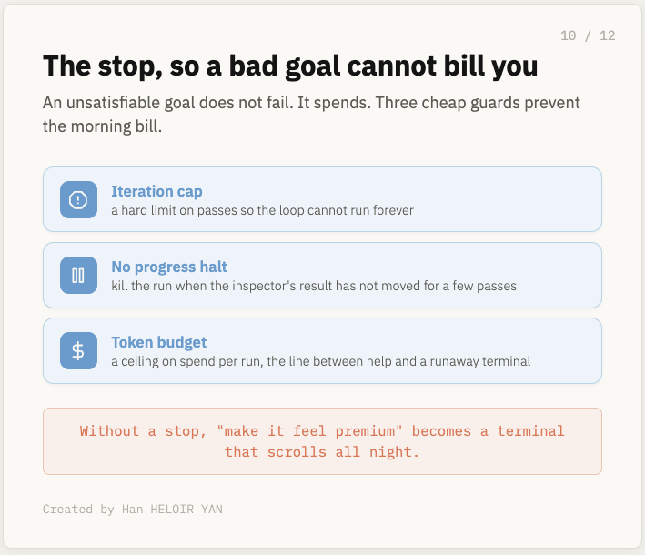
所以稀缺技能不是写 loop，而是写一个 loop 骗不了的 grader：一个自己重跑工作而不是读报告的 inspector，一个 diff 测试来发现篡改的 inspector，一个检查 agent 没见过的属性的 inspector。Loop 是免费的。Inspector 是你自己搭的。
自己搭 inspector，再加一个 stop
工具把 loop 给了你，也把容易被骗的 grader 给了你。值得花时间的部分，是它们没法替你 ship 的 inspector。
首先，不要 over-engineer loop。一个短脚本，每轮用 prompt 和仓库当前状态重新唤起 agent，保证上下文新鲜、不会腐烂在窗口里，就够了。Loop 是传送带，传送带便宜。把力气花在下游。
Inspector 只有一条规则：永远不要相信 agent 的报告。实践上是三个习惯：第一，它自己重跑验证——测试、构建、类型检查——而不是读 agent 的 claim。第二，它把测试套件 pin 在 agent 写不到的地方，每轮 diff 测试基线，这样被删除或削弱的测试会让 gate 失败，而不是顺利通过。第三，它持有一个 agent 从未见过的检查，一个放在 working tree 之外的 oracle，让 visible tests 变绿不能被变成谎言。
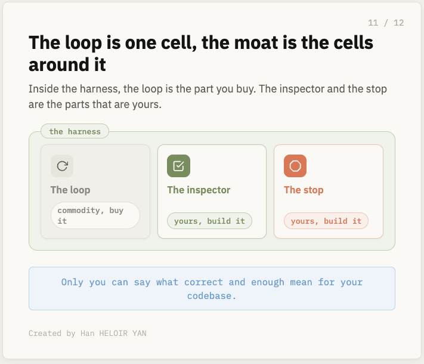
Inspector 的输出——带证据的真实 pass 或 fail——才是 loop 用来判断是否继续的东西。不是 agent 的话。骨架大概长这样：
def verify(repo):
if tests_were_tampered(repo, baseline): # 与 pin 住的测试套件 diff
return Fail("tests changed")
if not run_suite(repo): # 自己重跑，不要信任报告
return Fail("suite red")
if not run_hidden_oracle(repo): # agent 没见过的检查
return Fail("oracle red")
return Pass()
然后是 stop，因为无法满足的目标不会失败，它只会花钱。三道 guard，都很便宜：迭代上限，防止 loop 永远跑；无进展 halt，inspector 结果几轮没改善就杀掉；硬 token 预算。没有这些，一个模糊目标比如“让体验更 premium”会变成终端滚一整夜、早上收到账单。
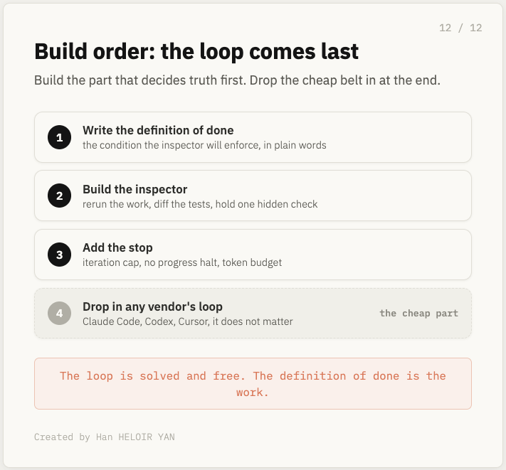
整个系统的质量等于 inspector 对“完成”的定义质量。Loop 你能买。这个定义你得自己写，而它会是你产出的最有价值的东西。
真正的工作在哪
Loop engineering，他们卖给你的技能，其实是 verifier engineering 披着 loop 的外衣。
倒回去看，到底是什么决定了任何事。Loop 没有——三家厂商 ship 得一模一样，而且就一个命令。模型也没有——同一个模型，在 green 和 correct 之间取决于怎么评判它。决定你是否交付可用代码的，是 inspector：它是否重跑了工作、是否发现篡改、是否检查了 agent 没见过的属性。决定你是否破产的，是 stop。这两者都是你搭的，而且都不是 loop。
现在回答第一节留下的问题。Loop 不是 harness 之上的一级。它是 harness 里的一个 cell，只是 harness 按 schedule 跑。Inspector 和 stop 是它旁边的 cell，而那些才是你的，因为只有你能定义对你的代码库来说什么叫“正确”、什么叫“够了”。这就是 loop 免费之后，价值转移去的地方。
所以这个动作不浪漫，而且和 hype 相反：先搭 inspector，再搭 loop。让它重跑工作而不是信任报告；diff 测试让篡改过不了 gate；持有一个 agent 看不到的检查；外面再包一层 stop：上限、无进展 halt、预算。然后随便把哪家厂商的 loop 放上去，因为一旦你拥有了“决定 green 是否有意义”的那部分，下面的传送带就可以互换。
领先的人不是在写更好的 loop。Loop 已经解决并且免费。他们在写 loop 太急于欺骗的 inspector，以及 loop 永远不会自己设的 stop。那篇帖子说：design loops。没错。但 loop 从来不是重点。inspector 才是。
致谢与延伸阅读
Peter Steinberger on X, 2026年6月7日，那个命名了这个时刻的帖子：stop prompting agents, design loops that prompt them. Geoffrey Huntley，Ralph technique，最简 bash loop 的起源，以及“可预测地失败”的论证。 The Neuron，Claude Code 创造者谈 agent loops，包括 goal evaluator 判断的是 transcript 而不是文件这一细节。 Jason Croucher，Claude Code goals 实战指南，关于视觉检查通过但从未确认目标元素的例子。 Addy Osmani 论 loop engineering，让这个词流行起来的 framing。 Cobus Greyling 论 loop engineering，关于 context、harness、loop 的谱系。 OpenAI Codex changelog, 2026年4月，记录 /goal于 4 月 30 日上线。Claude Code commands reference，关于 goal、loop、batch、background。